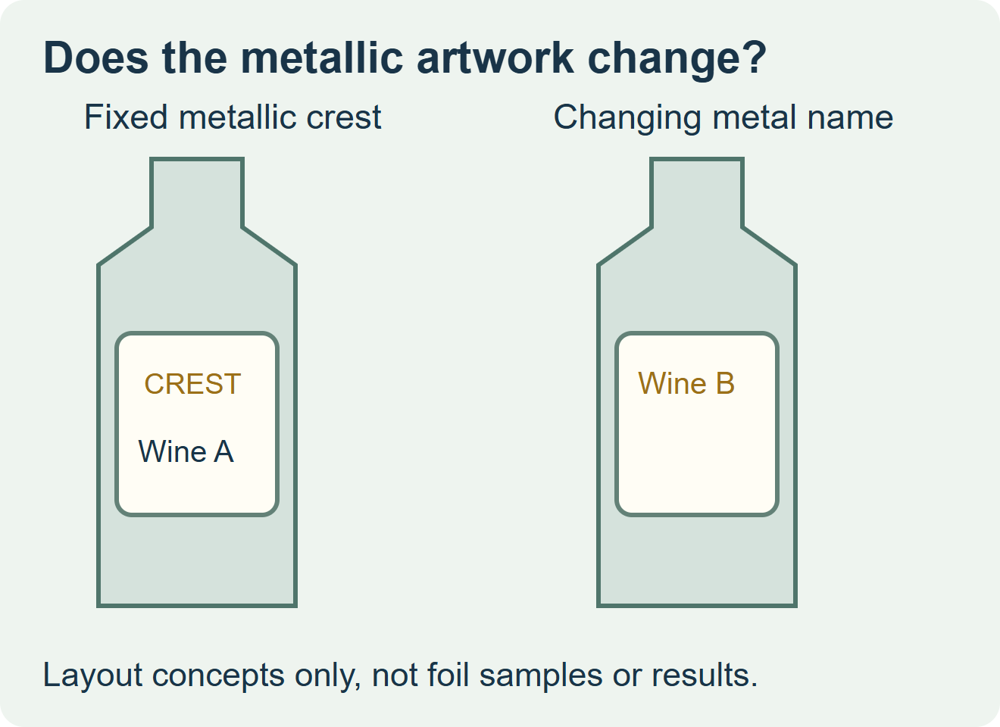
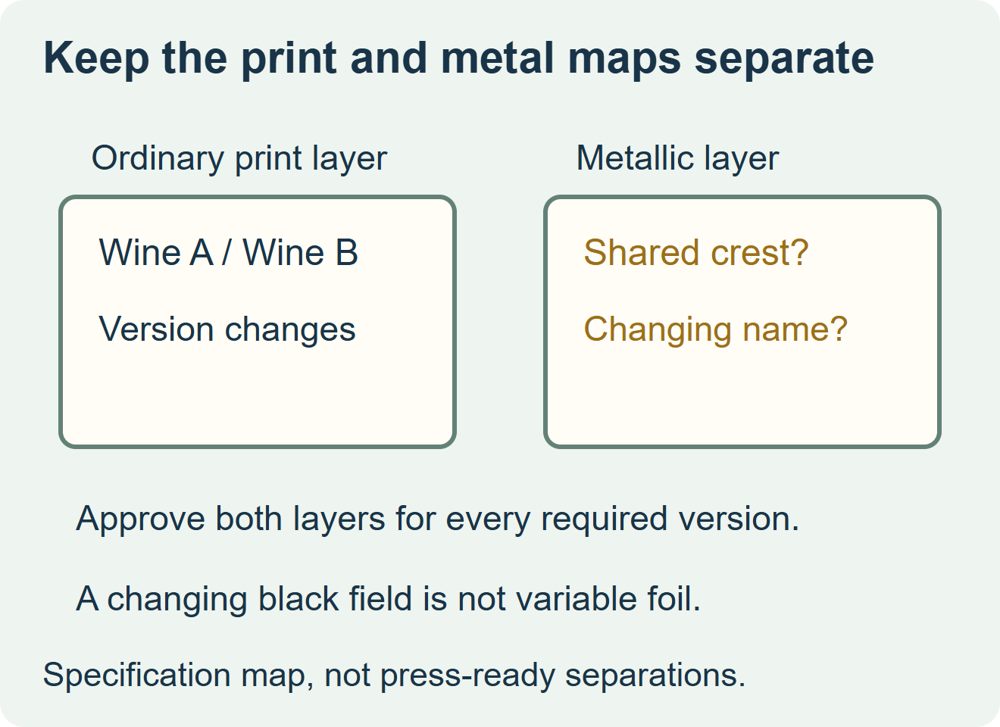

Request a digitally defined metallic route when the metallic image itself must change across short versions or individual labels, provided the converter supports that output on the proposed stock. Keep an existing stamping-die route in the comparison when the metallic motif stays fixed and its tool remains suitable. Separate ordinary printed changes from metallic changes before asking which route is economical. Neither digital colour printing nor a small order automatically settles the finishing choice.


Digital print and digital metal are different specifications
A digital press can print changing wine names while a separate finishing step stamps the same crest repeatedly. That is not the same job as changing the metallic wine name itself. Ask the converter which operation defines the metallic image and whether the quoted workflow supports the requested changes.
KURZ’s digital-embellishment overview describes digitally controlled metallic finishing without an additional stamping die. This identifies a decoration route to discuss, not a promise of no preparation, free setup or availability at ZFU. A cutting die, file preparation, finishing setup or sample charge may still belong to the actual offer.
Xeikon’s digital-metallization example describes a specific system combining printed colour with a digitally defined metallic layer, including changing metallic elements. Its hardware, substrates and claims are system-specific. Do not transfer its advertised minimum, speed, waste, food-safety or price statements to this label order.
Mark the part that actually changes
| Version difference | Question for a physical-die offer | Question for a digital-metal offer |
|---|---|---|
| Printed vintage changes; metallic crest stays fixed | Can the identified crest tool serve the exact unchanged metallic footprint? | Which print and finishing preparation still applies? |
| Metallic name changes by wine | Which separate or revised metallic tools and setup are quoted? | Does the actual workflow support every requested metallic version? |
| Metallic detail changes label by label | Can the proposed physical tooling route produce that required sequence at all? | How are the changing metallic layer and corresponding printed record kept matched? |
| Paper, size or tactile effect changes | Does the existing tool and sample still represent this construction? | Does the actual system support the new stock, footprint and finish? |


For a hypothetical tasting collection, the brand may print each wine name in black beneath one shared gold crest. A common suitable crest tool could remain useful even though the colour-print files differ. If the brand instead wants each wine name in metallic lettering, request the changed-metal scope explicitly. Do not count a printed name change as a new foil tool without explanation, or accept a fixed metallic crest as the requested changing name.
Compare the effect on the real stock
Use the actual metallic artwork, including the smallest word, reversed gap and any large area. Compare production-representative samples on the proposed paper and finished label. A screen showing a gold colour cannot establish reflection, edge appearance or paper interaction. Keep differences in material and finishing visible rather than call two routes identical because both look metallic.
If the requirement includes a raised or recessed crest, name it separately. A digitally defined metallic image does not automatically provide relief, and hot stamping is not by itself a complete embossing specification. Ask which additional operation and sample represent the required tactile effect. For chilled or ice-bucket use, retain the actual exposure and applied-bottle checks; an attractive flat sample does not approve them.
Price the metallic versions, then the usable labels
Ask for the same usable quantity by artwork and the same delivered construction. Separate confirmed preparation, tools, print, metallic finishing, other finish, conversion, sample work and delivery. Include the unchanged repeat and a named metallic-art change as separate cases when relevant. Use actual offers; there is no universal piece-count crossover or guaranteed saving here.
For a digitally changing metallic image, request representative complete outputs with the print and metallic layers matched. A demonstration that changes only ordinary black text does not show variable metallization. Keep held or rejected outputs identifiable under the agreed workflow; no serialization or anti-counterfeit function follows merely from a changing shiny number.
Choose the supported route that produces the accepted effect and version schedule within the actual commercial scope. Retain the approved layer files, construction, sample and any reusable tool reference. The existing tooling guide owns rights and portability; this decision concerns whether the metallic image should be fixed by a physical tool or defined digitally for the job.
Discuss the unresolved label requirement
Send final label size and stock, separated print and metallic layers, quantities per artwork, which metal details change, any existing tool reference, required tactile effect and intended bottle use. Review wine-label product options and prepare a label specification inquiry. The contact page opens an email draft and lists email or WhatsApp for attachments. Supply, proof options, testing, pricing and timing require project confirmation.